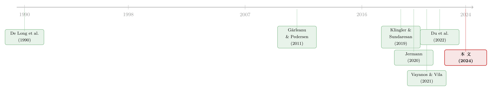

互换利差为何敢于「转负」：把套利的风险，算进价格里
本文读的是 Hanson, Malkhozov & Venter (2024, Journal of Financial Economics)：长期 互换利差 (swap spread) 由终端用户对长期 利率互换 (interest rate swap) 的需求、与受约束的中间商所能提供的供给共同决定。利差里既含有「占用稀缺中间商资本」的补偿，也含有一项被前人忽略的——「收敛风险 (convergence risk)」补偿，即未来需求—供给失衡可能让利差进一步走阔。作者用一个看似毫不相关的代理变量——一级交易商的国债净头寸 (PD-UST-Net)——把这两股力量分开，并发现二者对利差波动的贡献「大致平分秋色」。
1 一桩持续了十几年的「反常」
先讲一个事实，它本身就足够刺眼。
从上世纪 80 年代利率互换诞生，一直到 2008 年，长期互换的固定利率从来高于同期限国债收益率。也就是说，互换利差——互换固定利率减去同期限国债收益率——一直是正的。这不奇怪，毕竟互换的浮动腿挂在 LIBOR 上，带一点点银行信用风险，比无风险的国债融资利率高一截，定价上理应有个正的楔子。
然后，2008 年的全球金融危机 (Global Financial Crisis, GFC) 来了。长期（比如 30 年）互换的固定利率，跌到了国债收益率以下。互换利差转负，而且一负就是十几年，至今没有回头。
这件事为什么值得大书特书？因为一个负的互换利差，看上去像是一笔白捡的套利。你可以「收固定、付浮动」做一笔互换，同时做空国债——如果浮动腿挂的是 隔夜担保融资利率 (Secured Overnight Financing Rate, SOFR)、短端利差为零，那这组合在无套利世界里根本不该存在非零利差，它直接违反了 一价定律 (Law of One Price, LoOP)。Boyarchenko et al. (2018) 就把它称作「这么大、这么流动的市场里的一个谜」。$115 万亿美元的名义本金（2020 年）、约 $5000 亿美元的日均成交、10 年期互换 0.5 个基点的买卖价差——在这样一个堪称完美的市场里，钱却像是白白躺在地上没人捡。
关于「央行或制度如何亲手掰断套利这根杠杆，让同样的现金流卖出两个价格」，可参见《同样的现金流，两个价格》；关于 SOFR 互换本身的定价反常，可参见《把「信用敏感」弄丢之后，借钱反而更便宜了——重读 SOFR 折价》。
2 两派之争：是需求，还是供给？
钱没人捡，一定是因为「弯腰」本身有成本。那成本来自哪里？文献分成了两派。
需求派的代表是 Klingler and Sundaresan (2019)。他们说：养老金等机构的资产负债缺口扩大（即 资产负债管理, asset-liability management, ALM 的压力），逼着它们大量「收固定」来对冲长久期负债，这股需求把长端互换利率压了下去，于是利差转负。
供给派的代表是 Jermann (2020)。他说：根本不需要终端用户有任何净需求。只要中间商面临足够高的 资产负债表约束 (balance-sheet constraint)，哪怕它对互换利差的净敞口为零，均衡利差也可以是负的。换句话说，是「供给」被掐住了脖子。
接着，一个自然的问题是：到底是谁的错？
本文的回答既不站需求派、也不站供给派，而是说——两个都对，而且我们能把它们分开。这听上去像是和稀泥，但真正关键的一步，恰恰藏在「如何分开」里。
3 被忽略的第三件事：套利不只占资本，它还有风险
要把需求和供给分开，得先把这个市场的微观结构想清楚。
本文沿着 Vayanos and Vila (2021) 的传统搭了一个均衡模型。市场里有两类人。一类是终端用户 (end users)：养老金、非金融企业、相对价值型抵押贷款投资者等。他们对「收固定」的需求，不会自然地被另一些人的「付固定」需求所对冲——于是市场上存在一个随时间变化的、非零的净需求。由于互换是零净供给 (zero net supply)，这股净需求在均衡里必须被另一类人吃下。
另一类就是中间商 (intermediaries)：券商的互换交易台、固定收益对冲基金的互换交易员。沿用 Siriwardane et al. (2021) 的「分割市场 (segmented markets)」视角，本文假设这些中间商相当专业化，只盯着互换和国债的相对估值——即互换利差，以及短端利差（互换浮动腿利率与国债融资利率之差）。
中间商的「弯腰能力」被两件事卡住：
- 第一，他们是风险厌恶的。 做这笔套利会让他们暴露在短期、按市值计价的损失中，这限制了他们的意愿。
- 第二，他们面临可能绑定的资产负债表约束。 这限制了他们的能力——哪怕是一笔无风险交易也做不动。如 Gârleanu and Pedersen (2011) 所言，正是约束绑定，才打开了「非零 SOFR 互换利差」这扇门。
到这里，需求派和供给派的逻辑都被装进了同一个框架。但本文真正的贡献，是指出了一个被近期文献忽略的第三件事：
套利长期互换利差，不仅占用稀缺的中间商资本，它本身还是有风险的。未来若再来一次需求或供给的冲击，利差可能进一步走阔，让中间商蒙受短期亏损。于是中间商必须为承担这种需求—供给失衡风险 (demand-and-supply imbalance risk) 索取补偿——这恰恰把利差推得更负，且期限越长越明显。
这就是「收敛风险」的现代版本。它把我们带回 De Long et al. (1990) 开创的那条老路：噪声交易者的需求冲击会制造收敛风险，让理性套利者不敢放手去赌一价定律的违反。不同的是，在 De Long et al. (1990) 那里，一价定律失效只能存在于一个「不稳定」的均衡中；而在本文里，由于中间商受资产负债表约束，一价定律的违反出现在唯一的、稳定的均衡里，再被需求和供给冲击放大。
这正是本文最值得反复咀嚼的一点：传统的「需求型」资产定价模型，往往抽象掉了中间商的财富效应（供给冲击）；而「中间商」模型又常常不让需求独立波动。本文把两者捏在一起，于是有了一个可以同时回答「这次利差变动是因为需求还是供给」的结构。关于中间商杠杆如何反过来给资产的期限结构「定脾气」，可参见《一条会「调头」的曲线》。
4 模型：从均衡到一个可识别的结构 VAR
模型怎么运转？这一节把最关键的逻辑一步步拆开。
第一步，谁来定价。 专业化中间商既做互换、又在国债市场对冲利率风险，因此他们只在乎相对估值。在适当的「线性生成 (linearity-generating)」假设下，本文证明模型存在一个线性均衡：互换利差是三个外生状态变量的仿射 (affine) 函数——分别支配着短端利差、终端用户需求的水平、中间商财富的水平。
把这个核心方程拆开标注如下（下式为本文线性均衡的示意形式，符号系作者本文为讲解所设，意在呈现其仿射结构与符号方向，非逐字复刻原文记号）：
第二步，为什么这能识别。 线性均衡有一个漂亮的副产品：它可以写成一个 结构向量自回归 (structural vector auto-regression, SVAR)。而需求冲击和供给冲击，会在「利差」和「中间商头寸」上留下不同方向的指纹：
- 一个正的需求冲击（终端用户更想收固定）：让利差的绝对值变大，同时让中间商头寸的绝对值也变大——两者同向。
- 一个正的供给冲击（中间商财富上升）：让利差的绝对值变小，却让中间商头寸的绝对值变大——两者反向。
正是这「一个同向、一个反向」的差异，构成了 符号约束 (sign restrictions) 的基础。本文据此用 Uhlig (2005) 的方法对 SVAR 做集合识别 (set identification)，把潜在的需求因子和供给因子从数据里「反解」出来。
$$ \begin{bmatrix} \Delta S_t \\[2pt] \Delta q_t \end{bmatrix} = \mathbf{A}\, \begin{bmatrix} \varepsilon^{D}_t \\[2pt] \varepsilon^{S}_t \end{bmatrix}, \qquad \operatorname{sign}\!\big(\mathbf{A}\big)= \begin{bmatrix} - & + \\[2pt] + & + \end{bmatrix} $$
这里 \(\Delta S_t\) 是利差变动、\(\Delta q_t\) 是中间商头寸变动，\(\varepsilon^{D}_t\)、\(\varepsilon^{S}_t\) 分别是需求、供给冲击。符号矩阵的左列（需求）一负一正、右列（供给）两正——这就是上面那段直觉的矩阵翻译。值得一提的是，本文还证明：即便不施加线性生成假设，模型的主要定性预测依然成立，只是失去了这个干净的 SVAR 表示。
5 把模型带到数据：一个「张冠李戴」却好用的代理变量
模型要落地，最缺的一块拼图是：怎么观测中间商在互换利差交易上的净头寸？ 互换头寸没有公开、高频的数据。
但真正巧妙的一步在于此：本文用 一级交易商 (primary dealer) 的国债净多头头寸来代理它。具体地，中间商在「收固定」互换利差交易上的净头寸，约等于 \(-1\times\)PD-UST-Net\(_t\)；再由市场出清，终端用户在「收固定」互换上的净头寸就约等于 PD-UST-Net\(_t\) 本身。
直觉是：交易商是互换市场的关键中间商（TBAC, 2021），但他们力求对长端利率的总体水平没有净敞口。于是他们在国债上的净头寸，就成了一个部分镜像其互换头寸的对冲。
当然，作者很诚实：这个代理远非完美。交易商持有国债还出于别的原因——承销国债拍卖、对冲公司债等其他库存（Fleming and Rosenberg, 2008）。但关键在于，这种测量误差会衰减 (attenuate) 估计，让结果偏向「找不到关系」。换句话说，如果带着噪声还能找到显著关系，那真实关系只会更强。这是一个站在自己对立面的论证，反而更可信。
关于一级交易商如何吞下、扛住、再卖出一波波国债供给，以及国债拍卖如何挤占做市能力，可分别参见《国债拍卖的「接盘人」》与《一张资产负债表，两个市场》。
6 三个结果，一条主线
结果一：翻号是同步的。 长端互换利差与 PD-UST-Net\(_t\) 在时间序列上反向移动。而且，与「2008 年底终端用户需求发生了一次大的体制转换」这一说法一致，二者在 2009 年初同时翻号——PD-UST-Net\(_t\) 由负转正，恰好在互换利差由正转负的同时。在模型的眼里，这一幕讲的是：终端用户从「净付固定」转向「净收固定」，于是中间商在利差交易上的净头寸、以及他们索取的补偿（既为占用资本、也为承担收敛风险）一起翻了号。这也解释了为什么互换利差在 2008 年底转负、并维持至今。
值得强调的是模型的一个判断：单靠资产负债表成本上升，解释不了「翻号」。 危机后中间商成本上升或许抬高了利差的绝对幅度，但要让利差从正翻到负，必须有需求侧的体制转换。
结果二：头寸预测收益。 聚焦 GFC 之后的样本，PD-UST-Net\(_t\) 负向预测长端互换利差头寸的未来收益——即使控制了资产负债表成本。PD-UST-Net\(_t\) 越高，意味着终端用户的「收固定」净头寸越大，要诱使风险厌恶的中间商去接「付固定」的另一边，「收固定」利差交易的预期收益就必须下降。当作者进一步控制那些与互换头寸无关、却独立影响 PD-UST-Net\(_t\) 的因素（如国债发行的总量）时，这种可预测性反而更强——这正是收敛风险渠道在起作用的证据。
结果三：分解，且需求与供给各占一半。 用估计出的 SVAR，本文把潜在的需求、供给因子从利差和头寸中提取出来，并把利差的时序波动分解给两股力量。整个后危机样本里，需求冲击与供给冲击的贡献大致平分秋色。更妙的是，这套分解能告诉你某一段历史里到底发生了什么：
- 2014 年底到 2015 年底，一次大的供给内移把利差推向了深度负值区。这段时间恰好对应一连串监管变化抬高了中间商的资产负债表成本——2014 年 9 月 补充杠杆率 (Supplementary Leverage Ratio, SLR) 的定稿、2015 年 7 月 沃尔克规则 (Volcker Rule) 的落地（Boyarchenko et al., 2020）。
- 但 2014–2018 年的深度负利差，不能全归给供给。从 2016 年年中起，本文估计是终端用户「收固定」需求的上升，把利差进一步推到了零线以下。
再往里看一层，本文还检验了需求、供给因子各自的时序相关物，结论与既有文献彼此印证：呼应 Feldhütter and Lando (2008) 与 Hanson (2014)，来自抵押贷款投资者的对冲需求是终端用户净需求时变性的最重要驱动——当长端利率下行，提前还款上升、抵押贷款支持证券 (mortgage-backed securities, MBS) 的久期因负凸性 (negative convexity) 而缩短，投资者便涌入「收固定」互换；同时，呼应 Klingler and Sundaresan (2019)，养老金的资产负债管理也在塑造需求。供给侧则有较弱的证据：当中间商资产负债表容量的代理变量被压低时，供给也随之收缩。
一个反直觉的非对称。 由于需求和供给都重要，那是不是两者对「套利收益」的预测能力也一样强？模型说：不。正的需求冲击会同时抬高「占用资本的补偿」和「承担利差风险的补偿」，两个力同向叠加；而正的供给冲击（中间商财富上升）一边降低了中间商对利差风险的敞口、压低了风险溢价，一边又抬高了占用资本的补偿——两个力相互抵消。因此需求应当是比供给更强的收益预测变量。数据里也确实找到了这种非对称的证据，为「需求—供给失衡风险」这个渠道再添一笔旁证。
7 文献脉络
把这条线捋一遍，会发现它是几股研究的交汇。
源头有二。其一是 De Long et al. (1990)：噪声交易者制造的收敛风险，是套利的一道根本限制——本文把「收敛风险」从一个不稳定均衡里的玩具，搬进了一个稳定均衡里的核心机制。其二是 Gârleanu and Pedersen (2011)：资产负债表约束如何让一价定律的违反得以持续存在。
接着，需求与供给两派各立门户：Klingler and Sundaresan (2019) 从养老金需求出发，Jermann (2020) 从受约束的供给出发，分别解释了负互换利差的成因。

然后，本文的建模骨架来自 Vayanos and Vila (2021) 的需求型期限结构模型，并与政府债券需求因子的一大批文献相连（Greenwood and Vayanos, 2014；Hanson, 2014；Malkhozov et al., 2016 等），与 Kekre et al. (2022) 对政府债券市场的建模尤为接近。识别工具上，它接续了 Cieslak and Pang (2021) 用符号约束提取潜在因子的做法，方法本身则源自 Uhlig (2005)（其批判性讨论见 Fry and Pagan, 2011）。
最后是它的「同期邻居」Du et al. (2022)：同样注意到 GFC 后互换利差体制转换与交易商国债净头寸的同步。但两篇的侧重不同——Du et al. (2022) 想理解危机中那次体制转换本身；本文则要分离需求与供给在塑造利差水平中的角色，并把「需求—供给失衡风险」摆到台面上。作者也指出，这套框架不止适用于互换，还可推广到外汇市场的 抛补利率平价 (covered interest rate parity, CIP) 偏离、信用市场的 CDS—债券基差等一系列「近似套利」利差。
8 评述：贡献、隐忧与我想看到的下一步
贡献。 我认为本文最干净的贡献有两层。第一是概念上的：它把「套利占用资本」与「套利承担风险」两件事明确分开，并论证后者（收敛风险）是长端利差的一阶决定因素——这让「需求 vs 供给」的旧争论从一个非此即彼的口水战，变成一个可以定量分解的问题。第二是方法上的：用市场出清把一个不可观测的互换头寸，换成一个可观测的国债净头寸，再用符号约束识别 SVAR——这条「从理论的符号限制直接长出识别策略」的路子，干净、可复制。
对识别的担忧。 我有三点不踏实。其一，PD-UST-Net\(_t\) 终究是个嘈杂代理，交易商持有国债的动机远不止对冲互换；衰减偏误的论证保护的是「显著性方向」，却保护不了分解的数量级——「需求与供给各占一半」这个结论对代理噪声有多敏感，值得追问。其二，符号约束只做集合识别，得到的是一个识别集而非点估计，Fry and Pagan (2011) 的批评（识别集可能很宽、且依赖先验）在这里同样适用，「大致平分秋色」会不会只是识别集中点的产物？其三，模型靠线性生成假设换来 SVAR 表示，而真实的资产负债表约束是高度非线性、状态依赖的——约束在何时绑定，本身可能就是内生的。
下一步想看到什么。 我最想看到的是直接的头寸数据来给这个代理「校准」。监管端（如互换数据仓库、Form PF、交易商的监管申报）其实握有更接近真实互换头寸的信息；哪怕只在一个子样本上把 PD-UST-Net\(_t\) 与真实净头寸对一对账，整篇文章的说服力都会上一个台阶。其次，我想看到这套「需求—供给失衡风险」框架被搬到公司债与信用市场——那里既有更丰富的持有人数据，也有更明确的供给冲击来源。
评论与延伸（Q&A + 研究方向）
(a) 几个可能的疑问
Q：负的互换利差，真的是「免费的午餐」吗？为什么不算真套利机会？
不是免费的。对 LIBOR 互换，短端利差为正，非零互换利差本就与无套利相容；对 SOFR 互换，短端利差为零，非零利差确实违反一价定律，但本文说明：一旦中间商面临绑定的资产负债表约束（Gârleanu-Pedersen 渠道），这种违反就能在唯一的稳定均衡里持续存在，并被收敛风险放大。捡这笔钱要占资本、还要冒利差进一步走阔的风险，所以它有价、不免费。
Q：「收敛风险」和单纯的「资本成本」到底差在哪？
资本成本是「此刻占用资产负债表」的代价，是个静态的稀缺性价格；收敛风险是「未来需求或供给再来一击、利差进一步走阔」的代价，是个动态的风险溢价。本文的核心论点正是：长端、长期限的利差里，后者占了很大一块，而且它意味着——中间商当前在利差交易上的头寸规模应当能预测该交易的未来收益（即便已控制了当前的资本成本）。
Q：为什么偏偏用交易商的国债净头寸来代理互换头寸？这不是张冠李戴吗？
表面像，实则有逻辑。交易商力求对长端利率水平没有净敞口，于是其国债净头寸成为互换头寸的镜像对冲。它确实嘈杂（受承销、其他库存对冲等污染），但由于被用作自变量，测量误差只会衰减结果、让检验偏保守——能在噪声下找到关系，反而增强而非削弱可信度。
Q：既然需求和供给「各占一半」，那 Klingler-Sundaresan 和 Jermann 谁错了？
都没错，但都不完整。本文的分解显示二者在不同时段交替主导：2014–2015 的深跌主要是供给内移（SLR、沃尔克规则），2016 年后则是需求上升接力。把整个后危机样本平均下来，两股力量贡献相当——所以「需求 vs 供给」本就是个伪二选一。
Q：模型预测「需求比供给更能预测套利收益」，这个非对称凭什么？
因为正需求冲击同向叠加了两种补偿（占资本 + 担风险），而正供给冲击（中间商财富上升）对这两种补偿一升一降、相互抵消。于是供给冲击对收益的净影响更小。数据里找到了这种非对称的证据，是对该渠道的额外检验。
Q：这套框架只适用于美元利率互换吗？
不止。作者明确指出，其内核——一个带有独立需求与供给冲击的中间商定价模型——可推广到任何长期限「近似套利」利差：外汇市场的 CIP 偏离、信用市场的 CDS—债券基差等。互换只是它最干净的一个应用场景。
(b) 几个可能的研究问题与提案
1）把「需求—供给失衡风险」搬进公司债流动性。 【经济故事】公司债做市同样靠受约束的交易商资本，外资与本土机构的持有人结构变动构成需求冲击，监管（SLR、资本金）构成供给冲击。若收敛风险在互换上是一阶因素，它在公司债利差（尤其是长期限、低流动性段）里也应当被定价，并让交易商库存规模预测未来做市收益。 【可行性】中。所需数据：TRACE 逐笔成交、一级交易商公司债库存（FR 2004/调查）、Mergent FISD。识别可沿用本文的「符号约束 SVAR」：正需求冲击同向推动利差与交易商库存，正供给冲击反向。难点在于为公司债构造一个干净的「中间商净头寸」代理。
2）用真实互换头寸给 PD-UST-Net 校准。
【经济故事】整篇文章的分解都押在一个嘈杂代理上。若能用监管端（互换数据仓库 SDR、交易商监管申报）的真实净头寸在一个子样本对账，就能直接量化代理误差有多大、衰减偏误有多重，进而给「各占一半」一个误差带。
【可行性】中偏低。所需数据：SDR 逐笔互换数据（可得但清洗极重，且交易对手身份常脱敏）。识别上不需新方法，价值在于「测量验证」本身。doable 与否取决于数据访问权限。
3）外资持有人作为互换需求的来源。 【经济故事】外国央行与主权基金是美债的大买家，其久期偏好的变化会同时冲击国债需求与对冲性互换需求。把「外资流入」作为一个外生的需求位移工具，或许能更干净地识别需求冲击，而不必完全依赖符号约束。 【可行性】中。所需数据：TIC（美国国际资本流动）月度数据、外国官方持有量。识别策略：以外资流入作为需求侧的工具变量或外部工具（external instrument）嵌入本文 SVAR，做 proxy-SVAR。挑战在于外资流入是否满足排他性。
4）抵押贷款负凸性对冲与利差的高频因果。 【经济故事】本文说 MBS 对冲是终端需求的最重要驱动。当长端利率快速下行、MBS 久期骤缩，「收固定」对冲需求应当在数日内冲击利差。用利率的高频外生跳变（如 FOMC 窗口）能更干净地把这条机制单独拎出来。 【可行性】高。所需数据：30 年互换利差日度/周度、MBS 久期（如 Barclays/Bloomberg 的 OAD）、FOMC 日历。识别：事件窗口 + 高频识别，本文已用周度数据，把频率提到日度并锚定货币政策窗口即可。
5）SOFR 转换后，利差的需求—供给分解是否变了。
【经济故事】LIBOR 于 2021 年底退场，短端利差从「正」变成「零」。理论上这会改变利差的无套利地基，也可能改变需求与供给的相对角色。用本文方法在 SOFR 时代重新分解，可检验框架的外样本稳健性。
【可行性】高。所需数据：SOFR 互换利差、PD-UST-Net（FRBNY 一级交易商统计，持续更新）。识别：直接在 2022 年后样本上重估同一 SVAR。数据现成，唯一限制是后 LIBOR 样本仍偏短。
参考文献
- Boyarchenko, N., Gupta, P., Steele, N., Yen, J. (2018). Negative swap spreads. Federal Reserve Bank of New York Economic Policy Review.
- De Long, J.B., Shleifer, A., Summers, L.H., Waldmann, R.J. (1990). Noise trader risk in financial markets. Journal of Political Economy 98(4), 703–738.
- Du, W., et al. (2022). [Contemporaneous work on the regime shift in swap spreads and dealers' net Treasury position].
- Du, W., et al. (2023). [Intermediary constraints and asset price risk premia].
- Feldhütter, P., Lando, D. (2008). Decomposing swap spreads. Journal of Financial Economics 88(2), 375–405.
- Fry, R., Pagan, A. (2011). Sign restrictions in structural vector autoregressions: a critical review. Journal of Economic Literature 49(4), 938–960.
- Gârleanu, N., Pedersen, L.H. (2011). Margin-based asset pricing and deviations from the law of one price. Review of Financial Studies 24(6), 1980–2022.
- Greenwood, R., Vayanos, D. (2014). Bond supply and excess bond returns. Review of Financial Studies 27(3), 663–713.
- Hanson, S.G. (2014). Mortgage convexity. Journal of Financial Economics 113(2), 270–299.
- Jermann, U.J. (2020). Negative swap spreads and limited arbitrage. Review of Financial Studies 33(1), 212–238.
- Klingler, S., Sundaresan, S. (2019). An explanation of negative swap spreads: demand for duration from underfunded pension plans. Journal of Finance 74(2), 675–710.
- Malkhozov, A., Mueller, P., Vedolin, A., Venter, G. (2016). Mortgage risk and the yield curve. Review of Financial Studies 29(5), 1220–1253.
- Siriwardane, E., et al. (2021). [Segmented arbitrage].
- Uhlig, H. (2005). What are the effects of monetary policy on output? Results from an agnostic identification procedure. Journal of Monetary Economics 52(2), 381–419.
- Vayanos, D., Vila, J.-L. (2021). A preferred-habitat model of the term structure of interest rates. Econometrica 89(1), 77–112.